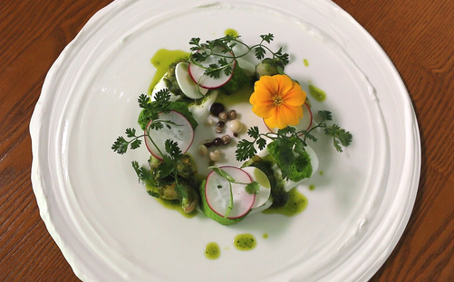

클래식 기타
통기타와 헷갈리시는 사람들이 꽤 있는데 통기타와는 다른매력을 가진 악기로 줄의 재질이나 넥에있는 플랫의 개수등 통기타와 확실한 차이점이 있는 악기입니다.
| 클래식 기타 | 통기타 | |
|---|---|---|
| 줄 재질 | 나일론 현 | 스틸 현 |
| 플렛의수 | 12 | 14 |
| 줄 감는 방식 | 걸어서 묶기 | 핀을 끼워 고정 |
요리
|  | 취미로 다양한 요리를 찾아보고 만들어 보는 것을 좋아합니다. |
|---|
몽룡이
몽룡이는 집에서 키우는 강아지의 이름입니다. 2013년 1월1일(당시 중학교 1학년)부터 같이 살기 시작해 지금까지도 함께 살고있습니다. 종류는 포메라니안으로 잠이 많은편입니다.
 |
|---|